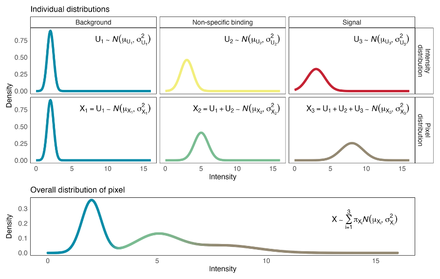

bgnormR implements bgnorm (Kharbanda, Tubelleza et al. 2025), a generative statistical framework for background correction, normalisation, and quality control of multiplex spatial proteomics data from Akoya PhenoCycler-Fusion, Cell DIVE, IMC, and CosMx platforms. The package includes a Java-free reader and writer for Akoya QPTIFF images and provides full integration with Bioconductor’s SummarizedExperiment / SpatialExperiment ecosystem.
How it works
bgnorm models log₂-transformed fluorescence intensities as a three-component Gaussian Mixture Model (GMM) representing background, non-specific binding, and biological signal. A closed-form deconvolution step isolates the signal component, and the Jensen-Shannon Divergence (JSD) between components 2 and 3 provides an automated staining-quality metric.

Installation
Install from Bioconductor (once accepted):
if (!requireNamespace("BiocManager", quietly = TRUE))
install.packages("BiocManager")
BiocManager::install("bgnormR")Install the development version from GitHub:
if (!requireNamespace("remotes", quietly = TRUE))
install.packages("remotes")
remotes::install_github("BhuvaLab/bgnormR")Quick start
Pixel-level normalisation
library(bgnormR)
# Read a multi-channel QPTIFF (no Java required)
img <- read_qptiff("path/to/image.qptiff")
dim(img) # height × width × channels
names(img) # protein panel
# Fit 3-component GMM and background-correct every channel
res <- bgnorm_pixels(img, sample_prop = 0.1)
# Inspect the model for one channel
bgnorm_results(res)[["PanCK"]]
# Visualise distributions and class assignments
plot_distributions(res)
plot_pixel_classes(res, markers = c("PanCK", "CD20"))
# Quality control: JSD per marker
qc_summary(res)
plot_jsd_heatmap(res)
# Export the corrected image
write_qptiff(res, "path/to/output.qptiff")Cell-level normalisation (SummarizedExperiment)
library(SummarizedExperiment)
# se: a SummarizedExperiment with raw counts assay
se <- bgnorm_sce(se, assay.type = "counts", name = "bgnorm")
# Per-marker model parameters are stored in metadata
metadata(se)$bgnorm_results[["CD20"]]$jsdKey functions
| Function | Description |
|---|---|
read_qptiff() |
Read Akoya QPTIFF images (eager or lazy/DelayedArray) |
write_qptiff() |
Write a QPTIFFImage to multi-page 16-bit TIFF with embedded metadata |
bgnorm_pixels() |
Pixel-level 3-component GMM correction on a QPTIFFImage
|
bgnorm_cells() |
Cell-level 2-component GMM correction on a numeric vector |
bgnorm_sce() |
Apply bgnorm_cells to every marker in a SummarizedExperiment
|
qc_summary() |
Per-marker JSD and signal proportion table |
plot_distributions() |
Histogram + fitted GMM density curves per marker |
plot_pixel_classes() |
Spatial class-assignment map (Background / Non-specific / Signal) |
plot_qptiff() |
Multi-channel intensity composite image |
plot_jsd_heatmap() |
JSD quality-control heatmap across markers and samples |
Citation
Kharbanda M, Tubelleza R, Salim A, Bhuva DD (2025). bgnorm: a generative framework for background correction and normalisation of multiplex spatial proteomics. bioRxiv. https://doi.org/10.1101/2025.placeholder